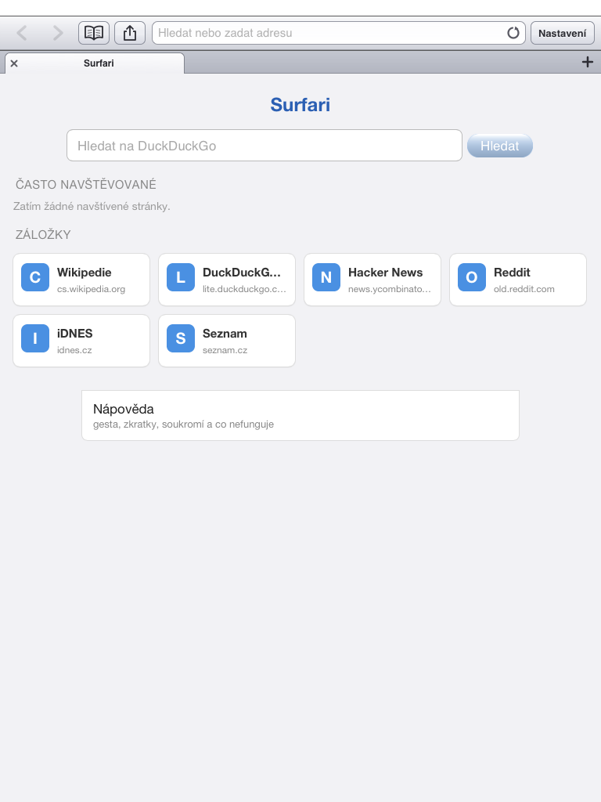
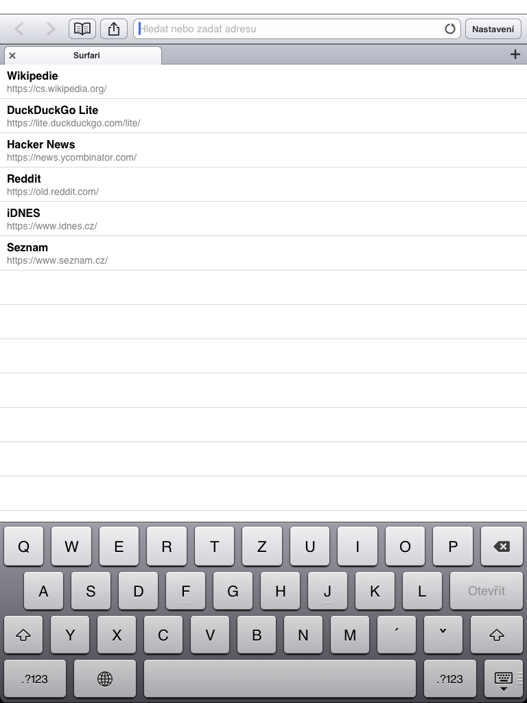

A web browser that opens today's websites on iOS 6
Safari on iOS 6 cannot open most of today's websites: it cannot make the secure connections they require, and its 2012 engine does not understand their CSS and JavaScript. Surfari keeps the iOS 6 engine for drawing pages and does everything around it that the old system cannot: its own TLS 1.2 stack with current root certificates, modern CSS rewritten for the old engine, modern JavaScript translated by its own transpiler, WOFF2 fonts and WebP images converted on the device. No proxy and no relay server: pages come straight from the sites you visit. The other apps here offer "Open in Surfari" for web links.


Unofficial apps by samcejko, not affiliated with or endorsed by Twitch, Google, Apple, TikTok, Instagram, Meta, Spotify, Kick, NVIDIA, Mojang, Microsoft, OpenRouter, Vine, X, diVine or the Moonlight, Sunshine and Apollo projects.